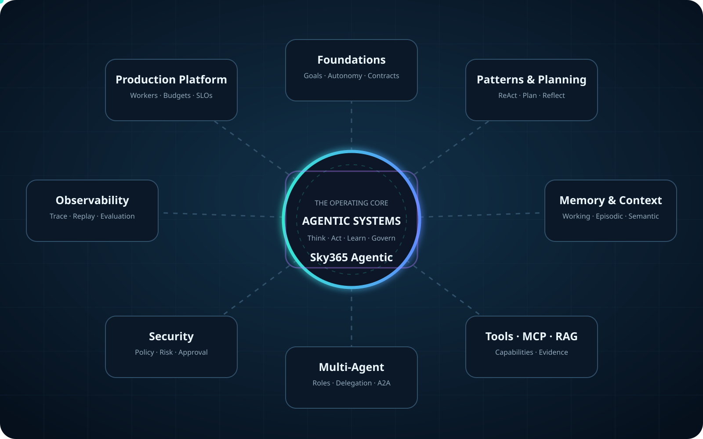
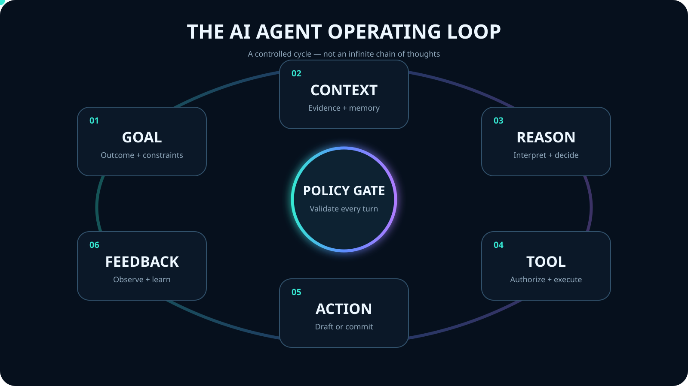
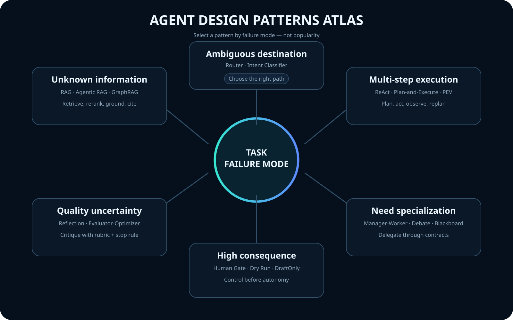
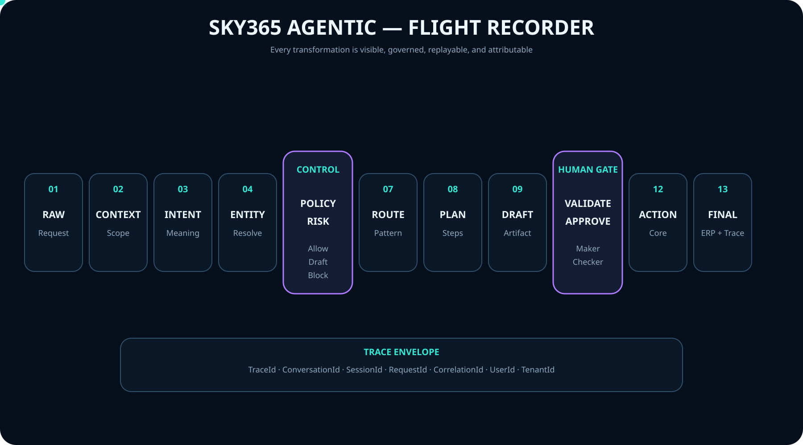

INFOGRAPHIC 00
Agentic Systems Universe
تسعة عوالم حول النواة التشغيلية، مع تدفق متحرك يوضح الاعتماد المتبادل.
افتح بالحجم الكامل ↗منهج بصري يجمع Agent Patterns وMemory وMCP وRAG والحوكمة والمراقبة والإنتاج، ثم يربط كل ذلك بخبرتنا العملية في بناء Sky365 Agentic.
VISUAL ATLAS
لوحات SVG قابلة للتكبير والطباعة، وبعضها متحرك داخليًا. تبدأ بالصورة الكبرى ثم تنزل إلى دورة الوكيل وأنماط التصميم وFlight Recorder.

تسعة عوالم حول النواة التشغيلية، مع تدفق متحرك يوضح الاعتماد المتبادل.
افتح بالحجم الكامل ↗
Goal، Context، Reasoning، Tool، Action، Feedback — تحت Policy Gate دائم.
افتح بالحجم الكامل ↗
اختيار النمط بناءً على failure mode، لا بناءً على شهرة المصطلح.
افتح بالحجم الكامل ↗
Raw → Context → Intent → Entity → Policy → Risk → Route → Plan → Draft → Validate → Approve → Action → Final.
افتح بالحجم الكامل ↗INTERACTIVE MAP
اضغط على أي عالم لرؤية دروسه وتدفقه المعماري. الخريطة ليست فهرسًا فقط؛ هي طريقة لفهم ترابط المنظومة.
THE 20-PART SERIES
كل درس يولّد Poster SVG حقيقيًا داخل المتصفح ويمكن تنزيله. المحتوى يشرح الفكرة، الخطأ الشائع، وعدسة Sky365.
MOTION LAB
الحركة هنا ليست زينة. هي توضح انتقال السياق والطاقة والقرار بين أجزاء النظام.
Vector animation خفيف وقابل للتكبير، يستخدم ملف Lottie محليًا داخل المشروع.
GIF فعلي يوضح انتقال الأحداث بين Memory وTools وPolicy وRAG وEvals وSky365.
LEARNING ROADMAP
المنهج لا يبدأ بـFramework. يبدأ بالمشكلة والقيود ومستوى الاستقلالية، وينتهي بمنصة يمكن تشغيلها ومراجعتها.
الهدف، السياق، الحدود، ومتى لا نحتاج Agent.
النمط، الخطة، الذاكرة، الأدوات، وعقد المخرجات.
السياسات، الموافقات، العزل، والتراجع الآمن.
Traces، Flight Recorder، Evals، وإعادة التشغيل.
Workers، Queues، Budgets، Versioning، وSLOs.
من وكيل واحد إلى منصة مؤسسية متعددة المستأجرين.
REAL-WORLD CASE STUDY
قيمتنا ليست إعادة سرد ReAct وRAG، بل توثيق كيف تتحول المبادئ إلى Action Core وسياسات ومسارات موافقة ومراقبة قابلة للتدقيق داخل ERP.
ORIGIN & DIFFERENTIATION
المستودع الأصلي يقدّم مكتبة تقنية ممتازة تضم 35 Architecture ووثائق MkDocs. أكاديميتنا تضيف طبقة عربية بصرية، Motion Design، وCase Study مؤسسي من Sky365.